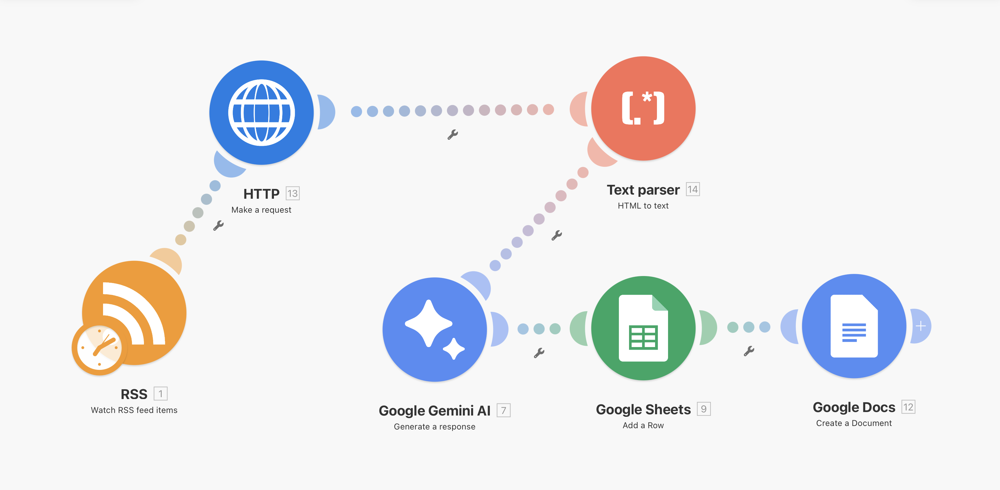

← Back to portfolio
🧠 📰 Integration RSS
Automatically collects, analyzes, and transforms RSS articles into structured insights using AI.
OVERVIEW
📊 What this system does
This automation monitors RSS feeds (e.g. TechCrunch), extracts full article content,
and uses AI to generate structured summaries, categories, and relevance scores.
PROCESS
⚙️ How it works
- Detects new articles via RSS feed
- Fetches full article content via HTTP request
- Converts raw HTML into clean readable text
- Uses AI (Gemini) to summarize and classify content
- Assigns category and relevance score
- Stores structured data in Google Sheets
- Generates reports in Google Docs
TECH
🧠 Tech Stack
- Make.com (automation engine)
- RSS feeds (data source)
- HTTP module (data extraction)
- Text Parser (HTML → clean text)
- Google Gemini (AI analysis)
- Google Sheets (data storage)
- Google Docs (report generation)
AUTOMATION
🔄 Automation Flow
End-to-end automation built in Make.com. Runs continuously and processes new articles without manual work.

VALUE
💡 Business value
- Reduces manual research by 80%+
- Instantly summarizes large volumes of content
- Identifies trends and relevant topics automatically
- Creates structured, usable insights for decision-making
CONTACT
📩 Work With Me
Want a system like this for your business?
Contact Me